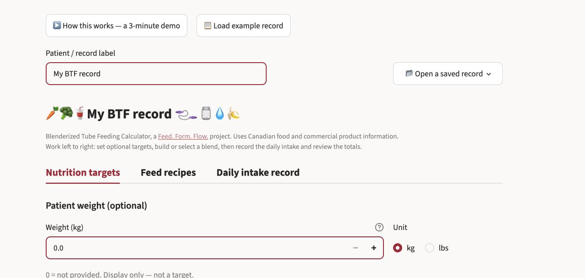
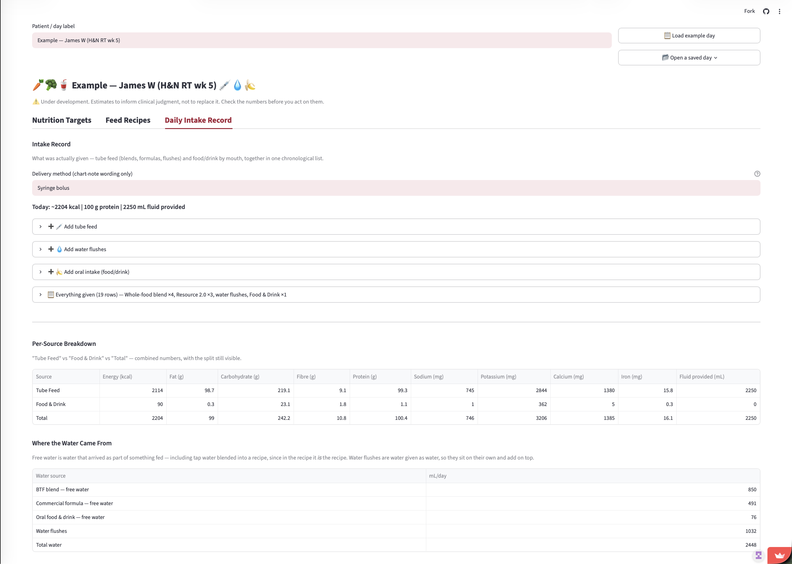
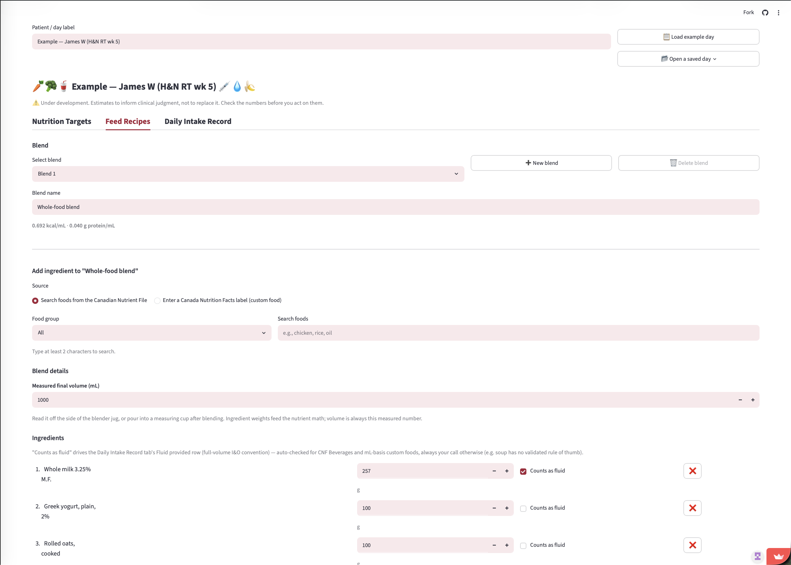

BTFCalc
Estimate what a home-blended tube feed actually provides.
BTFCalc calculates the energy, protein, fluid and micronutrients in a blend, then shows how changes to the blend or to the rest of the day affect the total. It uses the Canadian Nutrient File as its food reference data.
Free to use. No account or installation required.
If the calculator has been quiet for a while, Streamlit may ask you to wake it. The first load can take a minute.
Watch the 3-minute demo, which follows the tool from targets through to the chart note.

Characterise a blend, then record a day around it
Ingredient weights cannot reliably predict blended volume, so BTFCalc asks for the measured final volume and works from that.
- Enter the ingredients and the measured final volume to calculate kcal/mL, protein g/mL and the free-water fraction.
- Record a whole day in one chronological list: blends, commercial formulas, modulars, water flushes and food by mouth.
- Enter modular powders in grams and liquids in millilitres, and say whether each is given by tube or by mouth. Water used to mix a powder is recorded separately, because the calculator does not assume a dilution volume.
- Compare the blend against 51 adult Canadian tube-feeding formulas at a daily volume you choose.
- Search the Canadian Nutrient File by all your words in any order, with typo tolerance. It never chooses a food for you.
- Read a nutrition label from a photo into a form you check against the label in your hand.
- Save the day to a spreadsheet you can reopen or edit in Excel, and copy a chart note beside it.

How it works
-
1
Nutrition targets
Targets start blank. Enter patient-specific values, or leave them blank and review the totals on their own.
-
2
Feed recipes
Build the blend from its ingredients and enter the measured final volume. The kcal/mL and protein g/mL update as you go.
-
3
Daily intake record
Add blends, commercial formulas, modulars, water flushes and food by mouth to one chronological list for the day.
-
4
Review and record
Check the per-source breakdown and the water ledger, copy the chart note, or download the workbook to reopen later.

Scope and data
Nutrient tracking follows the Canadian Nutrition Facts panel and uses Canadian reference data, so BTFCalc is for Canadian use at present. Supporting another country would need a reviewed data pack and validation of its nutrient and reporting conventions.
A zero can mean “never measured” rather than “none present”. The report’s Coverage column shows how many of your sources supplied a value for each nutrient, and rows where nothing did are hidden rather than shown as a confident zero. A nutrient that is not printed on a label comes back blank, never as zero.
The calculator cannot measure viscosity, tube flow or tolerance. It does not set targets, recommend a feeding plan, or assess an individual.
Records and privacy
BTFCalc has no account system and no patient-record database. The hosted app processes inputs during the active session. Download a workbook to keep your work; it includes whatever you entered in the record label, so store and share it according to local privacy policy.
When the label-photo feature is enabled, the uploaded image is sent to an external service to extract the printed values. Upload the product label only, without patient information. Label values can always be entered manually instead.
If local policy requires calculation inputs to remain on the device, BTFCalc can be run locally with values entered by hand.
Try BTFCalc
Load the example record to see a worked case with a nine-ingredient blend, a commercial formula, water flushes and one oral food.
Free to use. No account or installation required.
A related tool
ENCalc plans or reviews an adult inpatient tube feed using Canadian manufacturer product information. It shares BTFCalc’s approach to showing the working.